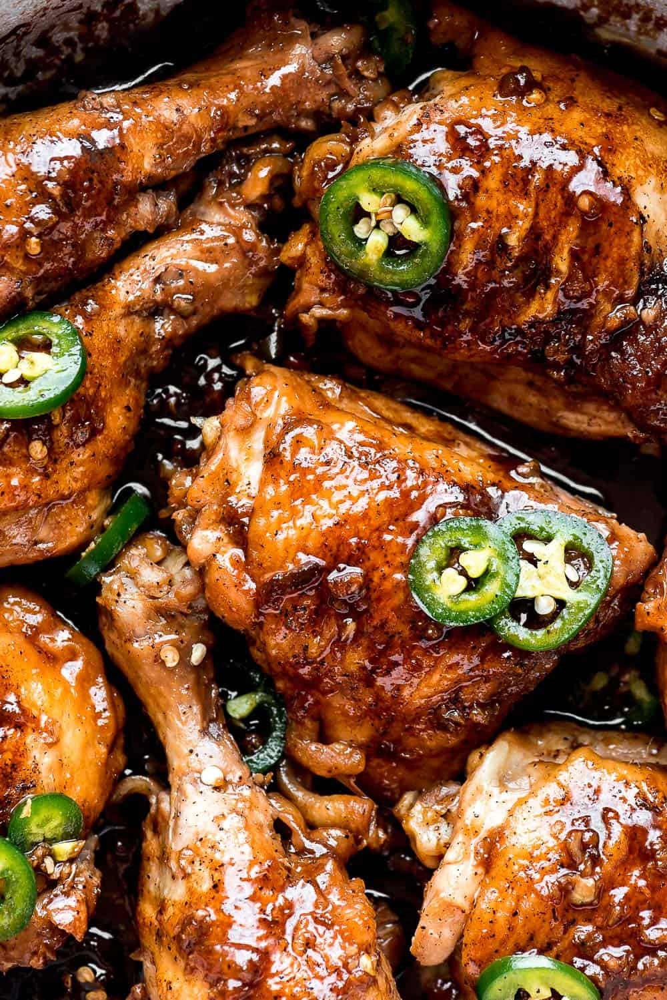

Chicken Adobo
Chicken Adobo

Chicken Adobo is a Filipino dish made by braising chicken legs
(thighs and/or drumsticks) in a sauce made up of vinegar, soy sauce,
garlic, and black pepper. It's tangy, salty, garlicy, slightly sweet, and
spicy. The chicken is slowly simmered in the sauce making it
flavorful and incredibly tender.
INGREDIENTS:
- 0.5
kg
Chicken Thigh And Leg
- 1
sachet
MAGGI Supreme Sarap
- 6
cloves
Garlic
- 3
tbsp
White Vinegar
- 0.75
cup
Water
- 1
tsp
Black Peppercorn
- 2
pcs
Bay Leaf
- 1
tbsp
Vegetable Oil
INSTRUCTIONS:
Step1: Combine chicken, MAGGI Supreme Sarap, garlic, vinegar, water, peppercorn and bay leaf in a pot.
Cover and simmer for 15 minutes. Strain chicken and set aside (20mins)
Step 2: Sauté chicken and garlic in oil until light golden brown. Pour cooking liquid and simmer until sauce is thick and
coating the chicken. (10mins)
Step 3: Transfer on a serving plate and serve. (1min)